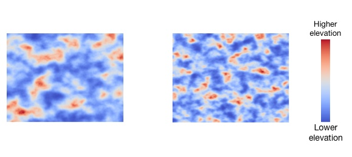

The study will test you on how well you can compare two maps displayed side-by-side.
You will be asked to identify which map contains steeper terrain on average. Terrain is steeper when there is larger CHANGE in elevation between adjacent points in the map.
Take a look at these two maps. Which one do you think shows steeper terrain on average? (click Next to find out).

| Previous | Next |